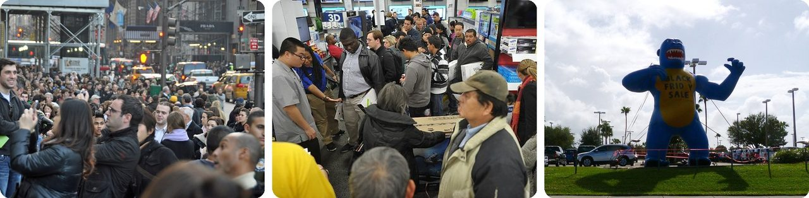
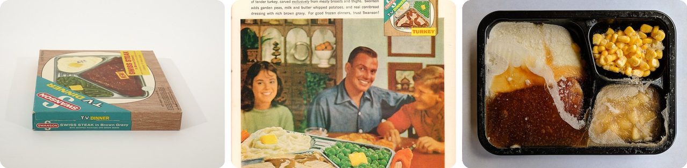

🌍 Top 10 L'histoire cachée de Thanksgiving et des achats des fêtes
23 novembre 2026
1. 🎭 Thanksgiving était autrefois le jour où l'on réclamait des bonbons
 D'environ 1870 jusqu'aux années 1930, les enfants de New York avaient une coutume de Thanksgiving appelée Ragamuffin Day (« le jour des petits va-nu-pieds »). Ils se déguisaient en mendiants avec des habits déchirés et allaient demander aux adultes des friandises et des pièces.
D'environ 1870 jusqu'aux années 1930, les enfants de New York avaient une coutume de Thanksgiving appelée Ragamuffin Day (« le jour des petits va-nu-pieds »). Ils se déguisaient en mendiants avec des habits déchirés et allaient demander aux adultes des friandises et des pièces.
Avec les années, les tenues sont devenues de plus en plus folles, et les enfants ont commencé à porter toutes sortes de costumes, pas seulement des haillons. De vieilles photos sur plaques de verre de ces « Thanksgiving Maskers » montrent des enfants avec des masques et de grands chapeaux, qui se bousculent dans la rue pour attraper des pièces lancées.
Puis les gens en ont eu assez de toutes ces demandes. Dans les années 1930, on a supprimé la partie où l'on réclamait des choses, et dans les années 1950, la coutume avait complètement disparu. Demander des bonbons à des inconnus en costume, c'est finalement passé à Halloween.
Bref, la fête des costumes et des bonbons venait autrefois avec de la sauce à la dinde.
2. 📅 En 1939, le Texas a eu deux Thanksgiving
 En 1939, novembre comptait cinq jeudis, donc Thanksgiving, fêté le « dernier jeudi », tombait le 30 novembre. Les commerçants s'inquiétaient : il ne restait que 24 jours de shopping avant Noël. Le patron d'un grand groupe de grands magasins a demandé au président Franklin Roosevelt d'avancer la fête d'une semaine.
En 1939, novembre comptait cinq jeudis, donc Thanksgiving, fêté le « dernier jeudi », tombait le 30 novembre. Les commerçants s'inquiétaient : il ne restait que 24 jours de shopping avant Noël. Le patron d'un grand groupe de grands magasins a demandé au président Franklin Roosevelt d'avancer la fête d'une semaine.
Roosevelt l'a fait, au 23 novembre (il y a 87 ans jour pour jour). Mais chaque État choisit ses propres jours fériés, alors le pays s'est divisé : 23 États ont pris la nouvelle date, 22 ont gardé l'ancienne, et le Colorado, le Mississippi et le Texas ont donné congé les deux jours. Le maire d'Atlantic City s'en est moqué en l'appelant « Franksgiving », et 62 % des Américains n'aimaient pas ce changement.
Et voilà le plus drôle : en 1941, une enquête du gouvernement a montré que la semaine en plus n'avait pas vraiment fait grimper les ventes. La même année, le Congrès a fixé Thanksgiving au quatrième jeudi de novembre, et c'est toujours le cas.
En gros, un président a déplacé une fête pour les acheteurs, et les acheteurs ne sont pas venus.
3. 🚓 Le « Black Friday » est né d'une plainte de la police de Philadelphie

La première utilisation connue de « Black Friday » (« vendredi noir ») pour le lendemain de Thanksgiving se trouve dans un magazine sur les usines, en 1951. Il parlait des ouvriers qui se disaient « malades » ce jour-là pour avoir quatre jours de congé d'affilée.À peu près à la même époque, la police de Philadelphie a commencé à l'appeler Black Friday à cause des embouteillages terribles et des foules d'acheteurs en centre-ville. En 1961, la ville a essayé un nom plus sympathique, « Big Friday » (« Grand Vendredi »), mais personne ne l'a utilisé. En 1985 encore, des magasins de Cincinnati et de Los Angeles n'avaient jamais entendu ce mot.
L'histoire joyeuse qu'on raconte souvent, celle du jour où les magasins passent enfin du « rouge » (perdre de l'argent) au « noir » (en gagner), est arrivée plus tard. Elle apparaît pour la première fois dans un journal en 1981, quand les magasins voulaient une raison plus jolie pour ce nom si sombre.
Autrement dit, le nom vient de policiers grognons, et la gentille explication a été ajoutée après.
4. 🎈 Macy's a déjà lâché ses ballons de parade dans le ciel, avec une récompense
 En 1928, Macy's a commencé à remplir les ballons de sa parade avec de l'hélium au lieu d'air ordinaire, alors ils flottaient. Après la parade, le créateur des ballons en a tout simplement lâché cinq. Ils étaient faits pour se dégonfler lentement et redescendre environ une semaine plus tard, et celui qui en trouvait un gagnait 100 dollars, à peu près 1 880 dollars d'aujourd'hui.
En 1928, Macy's a commencé à remplir les ballons de sa parade avec de l'hélium au lieu d'air ordinaire, alors ils flottaient. Après la parade, le créateur des ballons en a tout simplement lâché cinq. Ils étaient faits pour se dégonfler lentement et redescendre environ une semaine plus tard, et celui qui en trouvait un gagnait 100 dollars, à peu près 1 880 dollars d'aujourd'hui.
C'est devenu une chasse au trésor dans le ciel. En 1931, un pilote célèbre, Clarence Chamberlin, a repéré un ballon dragon en plein vol, lui a coupé la tête avec le bout de l'aile de son avion, et a rapporté les morceaux pour toucher une prime de 25 dollars. Un ballon hippopotame bleu s'est envolé au-delà de l'Empire State Building et on ne l'a jamais retrouvé.
Macy's a arrêté de lâcher ses ballons en 1932, après qu'une pilote débutante qui tentait le même coup a failli écraser son avion.
Imagine une bouteille à la mer, mais grande comme une maison.
5. 🚒 La plus vieille parade de Thanksgiving des États-Unis n'est pas celle de Macy's
 La plus vieille parade de Thanksgiving des États-Unis se trouve à Philadelphie. Elle a commencé en 1920, quatre ans avant celle de Macy's, et c'était Gimbels qui l'organisait, un grand magasin qui voulait que tous les acheteurs des fêtes filent droit vers son étage de jouets.
La plus vieille parade de Thanksgiving des États-Unis se trouve à Philadelphie. Elle a commencé en 1920, quatre ans avant celle de Macy's, et c'était Gimbels qui l'organisait, un grand magasin qui voulait que tous les acheteurs des fêtes filent droit vers son étage de jouets.
Plus de 50 employés du magasin ont défilé déguisés sur Market Street. À la fin, le père Noël arrivait au magasin et grimpait l'échelle d'un camion de pompiers jusqu'au rayon jouets, au huitième étage.
Gimbels a organisé la parade jusqu'à la fermeture définitive du magasin, en 1986. La parade a continué sans lui, et elle a toujours lieu à chaque Thanksgiving.
Bref, la première grande parade de Thanksgiving était une façon très chic de dire « venez faire vos achats à notre étage de jouets ».
6. 🏃 Une course de Thanksgiving est plus vieille que le marathon de Boston
 À Buffalo, dans l'État de New York, on organise chaque Thanksgiving depuis 1896 une course appelée Turkey Trot (« le trot de la dinde »). Elle est donc environ cinq mois plus vieille que le marathon de Boston. Elle fait à peu près 5 miles (8 km) le long de Delaware Avenue.
À Buffalo, dans l'État de New York, on organise chaque Thanksgiving depuis 1896 une course appelée Turkey Trot (« le trot de la dinde »). Elle est donc environ cinq mois plus vieille que le marathon de Boston. Elle fait à peu près 5 miles (8 km) le long de Delaware Avenue.
La première course n'avait que six coureurs sur un chemin de terre, et seulement quatre sont arrivés au bout. En 1899, il y a eu un scandale de triche : un coureur de Buffalo a fait une partie du parcours dans une charrette, alors son équipe a perdu contre celle de Rochester.
Elle n'a jamais été annulée à cause de la météo, même pendant les énormes tempêtes de neige de Buffalo. En 2000, la ville a déneigé le parcours en priorité pour que la course puisse avoir lieu. En 2011, elle pouvait accueillir 13 200 coureurs.
En gros, c'est un petit footing de fête qui dure depuis 130 ans.
7. 🍒 En 1959, une panique a failli chasser les canneberges de la table
 Le 9 novembre 1959, quelques semaines avant Thanksgiving, un responsable du gouvernement américain a annoncé qu'on avait trouvé sur certaines canneberges un désherbant qui pouvait peut-être causer le cancer. Il a conseillé de ne pas en acheter si on ne savait pas où elles avaient poussé.
Le 9 novembre 1959, quelques semaines avant Thanksgiving, un responsable du gouvernement américain a annoncé qu'on avait trouvé sur certaines canneberges un désherbant qui pouvait peut-être causer le cancer. Il a conseillé de ne pas en acheter si on ne savait pas où elles avaient poussé.
La panique a suivi. Certaines villes et certains États ont interdit la vente de canneberges, beaucoup d'épiceries les ont retirées des rayons, et les ventes de canneberges fraîches ont chuté de 73 %. Des journaux ont proposé de les remplacer par de l'écorce de pastèque marinée. Même le repas de Thanksgiving du président Eisenhower a eu de la compote de pommes à la place de la sauce aux canneberges.
Le vrai danger était minuscule : il aurait fallu manger des milliers de livres de ces baies pour atteindre la dose qui avait rendu malades des rats de laboratoire. Les producteurs de canneberges ont appelé le jour de l'annonce le « lundi noir ».
Autrement dit, les canneberges ont eu leur propre lundi noir des dizaines d'années avant le Cyber Monday.
8. 🥫 Le gratin de haricots verts a été inventé pour vendre de la soupe
 En 1955, Dorcas Reilly travaillait dans la cuisine d'essai de la marque de soupes Campbell's, à Camden, dans le New Jersey. Son travail : inventer des recettes avec des soupes Campbell's. Pour un article de journal, il lui fallait un plat rapide, fait avec des choses que presque toutes les maisons avaient déjà.
En 1955, Dorcas Reilly travaillait dans la cuisine d'essai de la marque de soupes Campbell's, à Camden, dans le New Jersey. Son travail : inventer des recettes avec des soupes Campbell's. Pour un article de journal, il lui fallait un plat rapide, fait avec des choses que presque toutes les maisons avaient déjà.
Elle a mélangé des haricots verts, de la crème de champignons en conserve et des oignons frits croustillants. Au début, ça n'a pas emballé les gens de l'entreprise, mais elle a continué à le défendre. La recette a été imprimée sur les boîtes de soupe sous le nom de « Green Bean Bake », et dans les années 1960, c'était devenu un classique de Thanksgiving.
Campbell's dit qu'environ 40 % de sa crème de champignons finit aujourd'hui dans ce plat, servi à environ 20 millions de repas de Thanksgiving par an. Au Minnesota, cette soupe allait dans tellement de gratins qu'on l'a surnommée « la colle luthérienne ».
Imagine une pub qui se mange.
9. 📺 Le tout premier plateau-télé était un repas de Thanksgiving

En 1953, l'entreprise Swanson a vendu son premier « TV Dinner » surgelé (un plateau-repas à manger devant la télé), et le menu, c'était Thanksgiving : dinde, farce au pain de maïs, petits pois et patates douces. Chaque aliment avait sa propre case dans un plateau en aluminium, comme ceux des repas servis en avion.On faisait chauffer tout le plateau au four pendant 25 minutes et on mangeait directement dedans devant la télé. Il coûtait 98 cents. La première série comptait 5 000 repas, et un an plus tard, Swanson en avait vendu plus de 10 millions.
Et voilà le plus drôle : la célèbre histoire raconte qu'il a été inventé pour écouler une montagne de dindes de Thanksgiving invendues. Cette histoire vient d'un cadre de Swanson, en 1996, et des membres de la famille Swanson et d'anciens employés disent qu'elle est fausse.
Tout un festin de Thanksgiving qui tient sur tes genoux.
10. 💻 Le Cyber Monday doit son nom aux achats faits au bureau
Le nom « Cyber Monday » est apparu pour la première fois le 28 novembre 2005, dans un communiqué de presse de la National Retail Federation, un grand groupement de magasins américains. Ce n'était pas encore un grand jour de shopping : à l'époque, il n'était qu'à peu près le 12e jour de l'année pour les achats en ligne.
Le New York Times a expliqué l'idée : après un long week-end passé à regarder des choses dans les magasins, des millions de salariés retrouvaient le lundi l'internet rapide du bureau et achetaient ce qui leur avait plu.
Quelqu'un avait déjà essayé une fête des achats en ligne : en 2003, un employé d'un site de fleurs a proposé le « White Wednesday » (« mercredi blanc »), la veille de Thanksgiving. Ça n'a jamais pris. Le Cyber Monday, lui, a marché, et en 2020 il est devenu le plus grand jour d'achats en ligne de l'histoire des États-Unis à ce moment-là, avec 10,7 milliards de dollars.
C'est la version des fêtes du jeu vidéo en douce pendant le cours.
Le saviez-vous ?
Les grands magasins inventent des traditions de fêtes depuis longtemps. À Peoria, dans l'Illinois, on organise une parade du père Noël le lendemain de Thanksgiving chaque année depuis 1887, lancée par un grand magasin local, Schipper & Block. C'est 33 ans avant la parade de Gimbels, et des dizaines d'années avant que quiconque appelle ce jour le Black Friday. Les grands magasins d'autrefois en centre-ville, avec leurs étages de jouets, leurs parades et leurs pères Noël, sont tout un monde à explorer la prochaine fois.
Crédits photo (Wikimedia Commons)
- #1: Thanksgiving Maskers LCCN2014689992.jpg by Bain News Service, publisher, Public domain
- #1: Thanksgiving Maskers scramble for pennies LCCN2014689988.jpg by Bain News Service, publisher, Public domain
- #1: Thanksgiving Maskers LCCN2014689993.jpg by Bain News Service, publisher, Public domain
- #2: President Franklin D. Roosevelt Carving the Thanksgiving Turkey - DPLA - a8d0c1276a8b1ab3fe7f230e75415f33.jpg by The National Archives. Office of the Archivist of the United States. Franklin D. Roosevelt Library. (6/30/1941 - 1949), Public domain
- #2: President Franklin D. Roosevelt addresses joint session of Congress, September 21, 1939.jpg by Associated Press, Public domain
- #2: Franklin and Eleanor Roosevelt FDR library cornerstone 1939.jpg by Acme Newspictures, Public domain
- #3: Black Friday at the Apple Store on Fifth Avenue, New York City, 2011.jpg by JoeInQueens from Queens, USA, CC BY 2.0
- #3: US-RETAIL-BLACK FRIDAY (flickr) by Diario Critico Venezuela, CC BY 2.0
- #3: Black Friday Sale Inflatable (22729837503).jpg by Rusty Clark - On the Air M-F 8am-noon from merritt usland FLA, CC BY 2.0
- #4: Macy's parade balloon inflation (11678).jpg by Rhododendrites, CC BY-SA 4.0
- #4: Clarence Chamberlin.jpg by Unknown authorUnknown author, Public domain
- #4: Macy's Parade Balloon (flickr) by Me in ME, CC BY 2.0
- #5: Mickey and Minnie Mouse at the Philadelphia Thanksgiving Day Parade (flickr) by chrisinphilly5448, CC BY-SA 2.0
- #5: Gimbels LOC4a18217v (cropped).jpg by Unknown authorUnknown author, Public domain
- #5: Curious George, Alvin and Oscar (flickr) by digitalART2, CC BY 2.0
- #6: Turkey Trot.jpg by BowenLarsen, CC BY-SA 4.0
- #6: Runners sprint to the finish line at the Turkey Trot (8769025).jpg by U.S. Army 105MPAD by Pfc. Kyle Kimble, Public domain
- #6: Snow over Delaware Avenue, Buffalo, New York - 20200207.jpg by Andre Carrotflower, CC BY-SA 4.0
- #7: Cranberry harvest, Kingston Massachusetts.jpg by Mathcar, CC BY-SA 4.0
- #7: Harvesting cranberries in Cranmoor Wisc.jpg by Jeff the quiet, CC0
- #7: Canned cranberry sauce - November 2023 - Sarah Stierch.jpg by Missvain, CC BY 4.0
- #8: Green bean casserole.jpg by Rick Kimpel from Spring, TX, USA, CC BY-SA 2.0
- #8: green beans casserole (flickr) by bradleygee, CC BY 2.0
- #8: Green Bean Casserole (flickr) by arnold | inuyaki, CC BY 2.0
- #9: Swanson TV Dinner Swiss Steak box - DPLA - 033da20203975e46c6b8f595f3419a71 (page 1).jpg by Campbell Soup Company, CC BY 4.0
- #9: 1960 Swanson TV Dinner Advertisement Life Magazine December 5 1960 (flickr) by SenseiAlan, CC BY 2.0
- #9: Frozen-TV-dinner-top-view.jpg by Sir Beluga, CC0
- #10: Woman shops online with a small shopping cart and cash in a modern office setting during the afternoon.jpg by Shixart1985, CC BY 2.0
- #10: Black Friday and Cyber Monday sign at the Intertoys, Rotterdam (2018).jpg by Donald Trung Quoc Don (Chữ Hán: 徵國單) - Wikimedia Commons.(Want to use this image?), CC BY-SA 4.0
- #10: Mini shopping cart placed on a table next to a laptop in a modern office setting.jpg by Shixart1985, CC BY 2.0


.jpg){kind=link}
.jpg){kind=link}

.jpg){kind=link}

.jpg){kind=link}


.jpg){kind=link}


.jpg){kind=link}